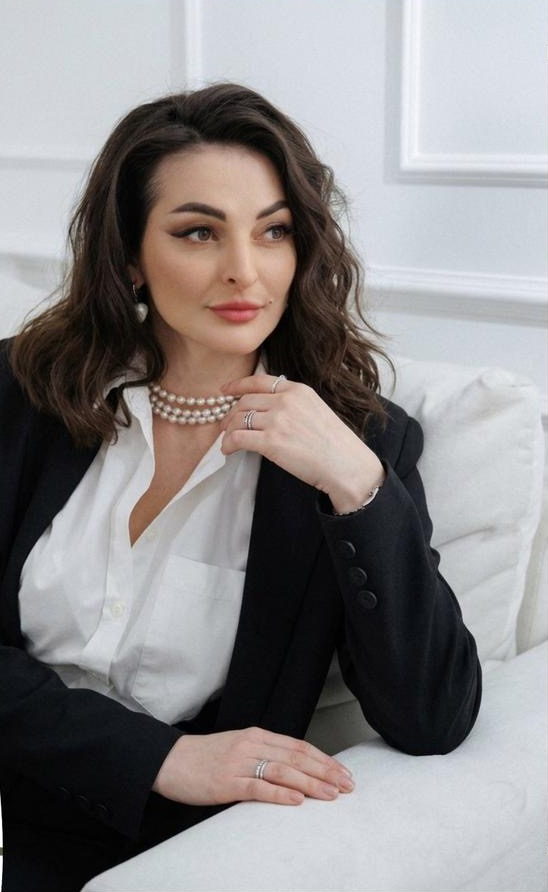
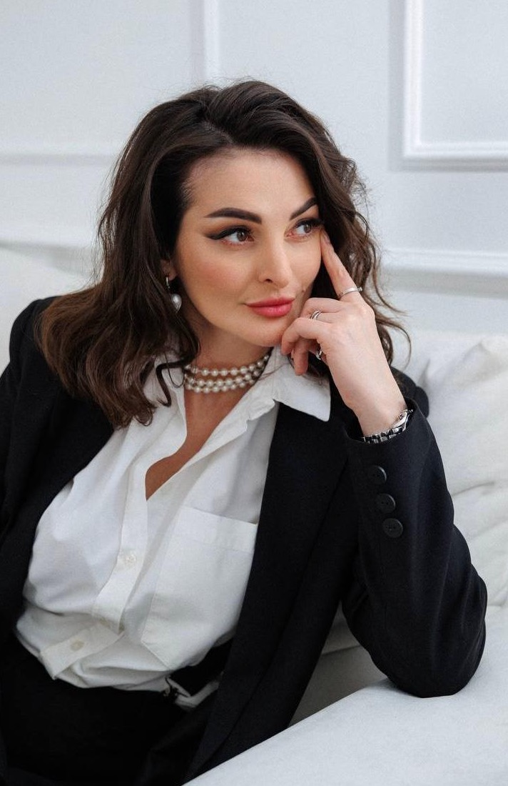

@limanskaya_podolog
Юлия Лиманская
Основатель Академии и Центра подологии

01 обучение
Курсы и клуб для мастеров педикюра
02 об авторе
Об авторе курсов

- 700+обучила студентов
- 20мастеров в штате
- 2021золото международного чемпионата
Меня зовут Юлия Лиманская.
Я — основатель и идейный вдохновитель Академии и Центра подологии, где готовят специалистов высокого класса для работы с самыми сложными случаями стоп.
Моя миссия — системное образование в области педикюра и подологии. Под моим руководством выстроен полноценный центр и академия, в которой успешно работает штат из 20 профессиональных мастеров, каждый из них подготовлен лично мной — с нуля до уверенного эксперта.
Я не просто преподаю — я создаю систему, в которой теория, практика и бизнес-подход объединены, чтобы вы могли работать безопасно, профессионально и востребованно.